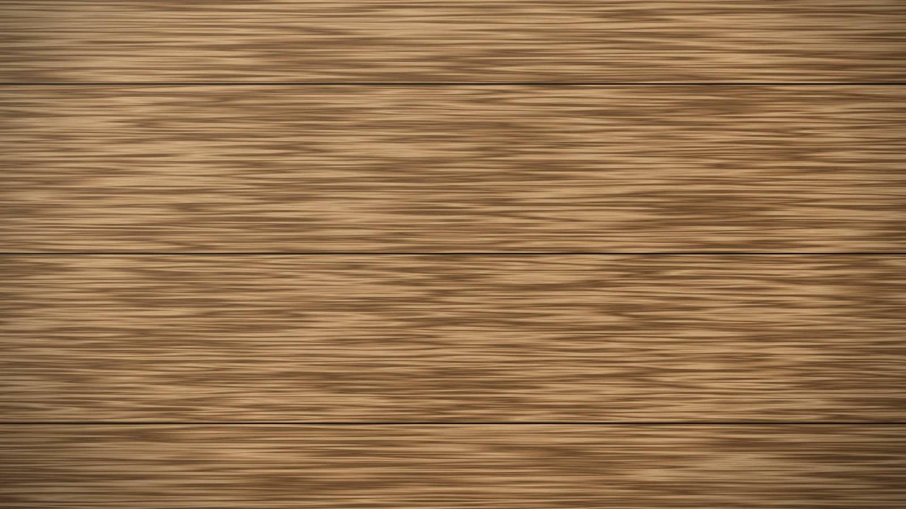

Aus der Werkstatt
Die Pflege von Massivholz
Massivholz verlangt wenig, aber regelmässig. Ein paar einfache Gewohnheiten halten einen Tisch, eine Tür oder ein Fenster über Jahrzehnte schön.

Massivholz verlangt wenig, aber regelmässig. Ein paar einfache Gewohnheiten halten einen Tisch, eine Tür oder ein Fenster über Jahrzehnte schön.
Im Alltag
Mit einem weichen, leicht feuchten Tuch abwischen und danach trocknen. Scharfe Reinigungsmittel, stehendes Wasser und heisse Pfannen direkt auf der Oberfläche vermeiden.
Ein- bis zweimal im Jahr
Geölte Oberflächen werden mit einer dünnen Schicht desselben Öls aufgefrischt, eingerieben und abgenommen. Sie sehen, wann es so weit ist: Die Oberfläche wirkt trocken, und Wasser perlt nicht mehr ab.
Spuren und Kratzer
Spuren gehören zum Leben eines Stücks. Viele lassen sich örtlich ausschleifen und nachölen — einer der stillen Vorteile von Massivholz. Wenn Sie unsicher sind, schicken Sie uns ein Foto, und wir beraten Sie.
Fenster und Türen
Auf der Wetterseite die Oberfläche jeden Frühling prüfen, besonders untere Rahmenhölzer und Fensterbänke. Kleine Ausbesserungen zur rechten Zeit ersparen später grössere Reparaturen.